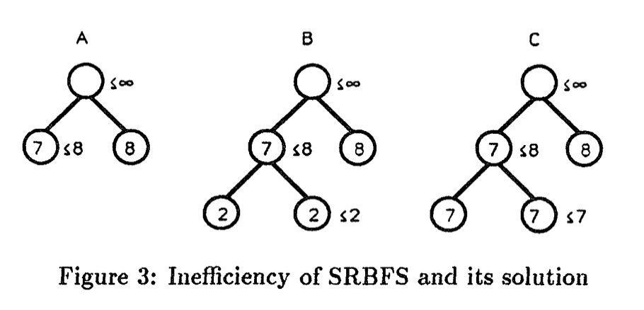

Recoursive Best First Search
Introduzione
RBFS e' un algoritmo utilizzato per risolvere problemi di ricerca, (serie di azioni che dallo stato iniziale portano ad uno stato goal). La particolarita di questo algoritmo e' che riesce a generare nodi contenenti stati mai visti prima nello stesso ordine della BEST FIRST SEARCH, utilizzando solamente memoria lineare, e' un algoritmo ricorsivo.
Descrizione e Pseudocodice
RBFS si basa sui seguenti principi:
- E' un algoritmo ricorsivo che ad ogni chiamata su un singolo nodo tiene traccia dell'alternativa migliore (limit) in 'f', nei suoi predecessori
- Richiamera se stessa nel successore con 'f' minore, passando come alternativa (limit) il minimo tra la 'f' minore dei suoi fratelli ed il limit passato al nodo in questione
- Se i successori hanno tutti una 'f' piu' grande, l'algoritmo tornera il valore minore che sfora il limite e salvera' tale valore nel nodo chiamato sovrascrivendo sua 'f' in modo tale che se l'alternativa (limit) porta ad un valore di f maggiore di quello trovato nel nodo inizialmente citato sappiamo che il suo sotto albero potrebbe essere quello che ci porta alla soluzione con costo minore.
- Settiamo la 'f' dei successori come il massimo tra la propria 'f' e quella del nodo (che potrebbe essere maggiore della propria 'f' effettiva se e' la seconda volta che passiamo per tale nodo. Il motivo pratico verra spiegato piu avanti, l'algoritmo funzionerebbe ugualmente anche senza tale operazione)
Il calcolo della complessita in tempo e' piu' complicata e va oltre lo scopo di questo trattato.
Riprendiamo ora la riga 9 dello pseudo codice sopra riportato, la quale assegna alla f del successore il massimo tra la f effettiva e quella del nodo corrente questo accade, a meno di euristica non consistente (garantisce la non decrescenza di f lungo un qualsiasi cammino), solamente se il nodo corrente era gia stato attraversato e quindi ha il valore di f pari al minimo di f delle foglie del sotto albero radicato in lui espanso prima di sforare il limite dato da un predecessore del nodo corrente. vediamo con un esempio cosa succederebbe con un esempio pratico cosa succederebbe se non facessimo questa operazione.
 Prendiamo in considerazione l'albero sopra riportato, nella situazione in cui f e' pari alla profondita' del nodo stesso. nella situazione riportata abbiamo due nodi uno con f=7 e l'altro con f=8, valori di backup. Espandendo i successori del nodo piu a sinistra avremmo due nodi con f a 2, se non noi effettivamente non assegnassimo alla loro f il massimo rispetto al valore del nodo padre succederebbe quanto segue, Ricorreremo nel successore con f minore (in caso parita' sceglieremo quello piu a sinistra) e setteremo l'alternativa (limit) pari al minimo tra 8 (nodo fratello del padre) e 2 (nodo fratello), in tal caso nella funzione richiamata ci ritroveremo subito a sforare il limite imposto dal fratello del nodo stesso (2, i successori avranno tutti f=3) e quindi effettuaremo salti a destra ed a sinistra in continuazione, aumentando incrementalmente il limite, fino ad arrivare ad una profondita piu alta dell'alternativa (8, imposta dal secondo successore della radice) o fino a raggiungere un nodo che rappresenta lo stato goal, nel caso abbia una profondita uguale ad 8. Quindi il calcolo del massimo serve proprio per ovviare a questa inefficienza, in tal caso (fig 3.C) noi continueremo a scendere sempre nel successore piu' a sinistra fino a sforare il limite di 8.
Concludendo il discorso, si puo notare che i nuovi nodi generati saranno visitati con ordine Best First Search (con opportuni salti) mentre i nodi rigenerati saranno visitati in ordine DFS (con meno overhead dovuto ai salti rispetto alla natura ricorsiva dello stesso algoritmo).
Conclusioni
All'atto pratico questo algoritmo non e' estremamente efficiente in quanto soffre di eccessiva rigenerazione dei nodi,
questo dato dalla poca memoria utilizzata, che e' limitata ad essere lineare in profondita in b e d, anche se effettivamente
ne e' disponibile di piu'.
Per ovviare a cio sono stati introdotti algoritmi il cui limite di complessita in spazio (memoria utilizzata) e' definito a priori a seconda della macchina su cui girano (esempi sono SMA* e MA*).